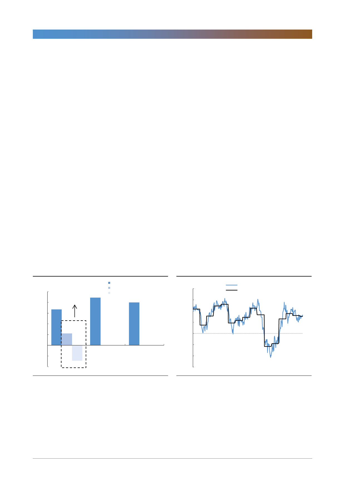

SK이노베이션(096770)
주가가 반영하고 있는 것은?
190,000원선에 걸쳐 있는 현재 주가는 동종업계 ROE-PBR 분석기준상 8%선
의 ROE가 지속될 것을 반영하고 있다. 이는 작년 4분기와 올해 1분기에 영향을
미친 유가 급락이 재연되고 정제마진도 역사적 바닥수준에서 뚜렷하게 개선되지
않을 것을 가정한 것과 같다. 그러나 그러한 부정적 상황은 이미 지나갔다. 유가
는 이미 상승했고 미국 및 말레이시아 정유사 화재, 신규설비 지연, 미국 수출용
파이프라인 완공 그리고 국제해사기구(IMO)의 황 함유량 규제 등 2분기에서 하
반기 사이 정제마진을 상승시킬 요인들은 줄줄이 대기하고 있다.
전기차 배터리 사업 가치도 미반영
더 중요한 점은 최소 14조원의 가치를 가지고 있는 SK이노베이션의 배터리 관
련 사업은 주가에 반영도 하지 않은 점이다. 현대, 기아, 벤츠, VW에 이어 Ford
까지 전기차 배터리 주문을 받아 생산능력은 작년 4.7GWh에서 2022년에는
60GWh에 이를 전망이다. 배터리 분리막은 세계 2위로 작년 영업이익만 870억
원을 기록했다. 2022년 전기차 배터리 관련 사업의 EBITDA는 최소 7천억원을
상회할 것으로 전망되며 급격한 성장추세를 감안할 때 적정 EV/EBITDA는 20
배 이상을 받아야 한다. 목표주가는 기존사업 가치를 동종업계 ROE-PBR 분석
기준으로 215,000원 나머지는 전기차 배터리 가치를 일부 반영했다. 전기차 배
터리 가치는 매년 균등하게 상승해 2022년 14조원에 이를 것으로 가정했다. 전
기차 배터리 생산능력은 올해 말이면 20GWh로 전년대비 326% 확대된다. 올해
말에서 내년 초 급격한 배터리 가치 상승을 전망한다.
[그림 1] 10~11월 고가 원료가 1분기에 투입
(달러/배럴)
10
8
평균 (0.4)
6.7
6
4
2.2
2
0
(2)
(4)
(2.9)
Jan-19
자료: 페트로넷, 한국투자증권
1개월 후행 정제마진
1.5개월 후행 정제마진
8.9
2개월 후행 정제마진
8.0
Feb-19
Mar-19
[그림 2] 유가 상승으로 한달후행 정제마진 회복
(달러/배럴)
20
15
일별 아시아 1개월 후행 정제마진
월별 아시아 1개월 후행 정제마진
10
5
0
(5)
(10)
(15)
Jan-18 Apr-18
자료: 페트로넷, 한국투자증권
Jul-18
Oct-18
Jan-19 Apr-19
2